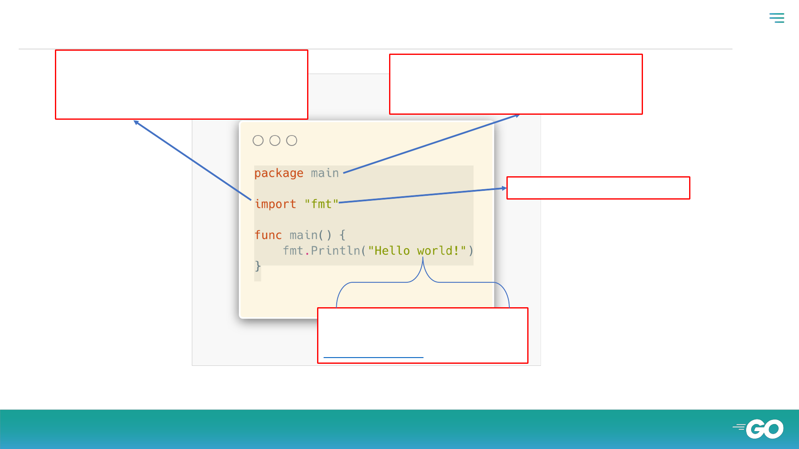
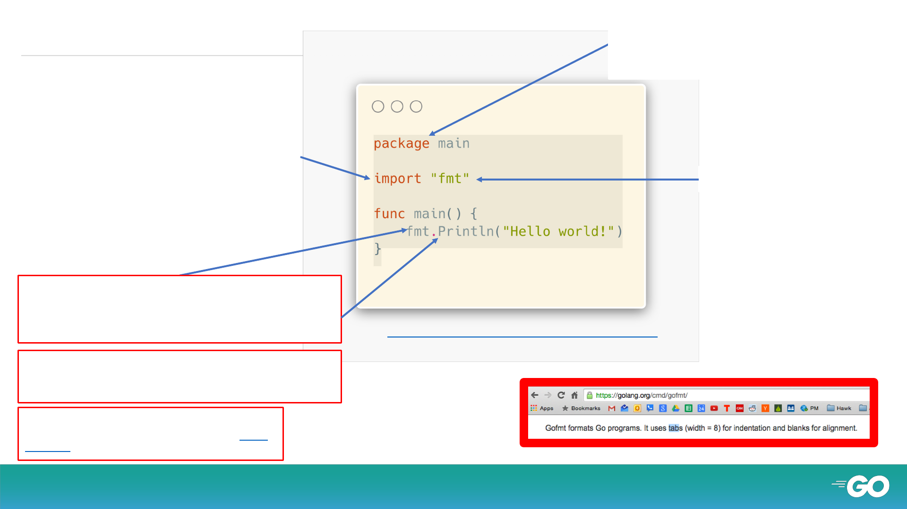
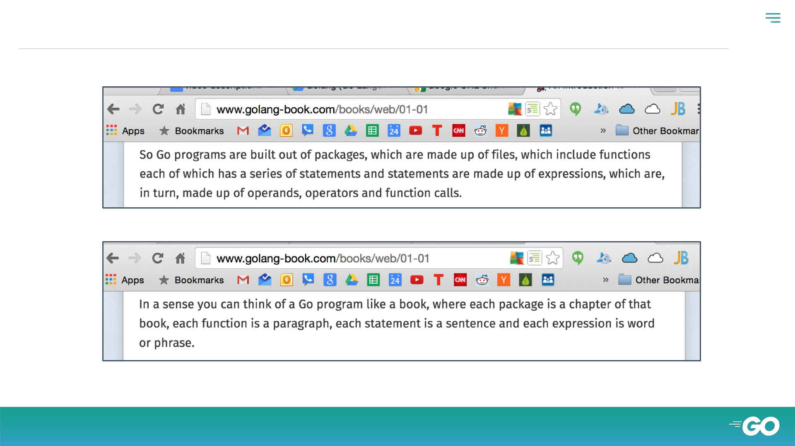

An Ultimate GopherLabs
Hands-on Labs

• Docker Community Leader , Bangalore
• Author :- lightweight Kubernetes with k3s
with packt Publication
• Gopherlabs – 200+ tutorials
• Okteto – Kubernetes For Developer , Bangalore
Meetup Organizer
Who Am I?
@BiradarSangam
Sangam Biradar
EngineITops.com

Every go file begins with a package name. The name of the
package must be the same as the folder name except for
package main. Package main is the entry point for your
program.
The “fmt” package is being imported.
If you are using code from other packages, you list the
packages that you want to import. This allows you to use
code in your program that other people have written.
Packages are also sometimes referred to as libraries.
A parameter is the variable which is part of the
func’s signature (func declaration). An argument
is an expression used when calling the func.
source: modified from stackoverflow

The func main() is the entry point for your program; the first code
that will run. The package main can also have other functions
besides func main().
An expression specifies the computation of a value by
applying operators and functions to operands. source:
effective go
Code from the “fmt” package is being used. Println is a function
declared in the “fmt” package. For a function to be accessible to
other packages, it must be Capitalized. This is analogous to
“public” in other languages.
The “fmt” package is being imported.
Every go file begins with a package name. The name of the
package must be the same as the folder name except for
the main package. The main package is the entry point for
your program.
If you are using code from other packages, you list the
packages that you want to import. This allows you to use
code in your program that other people have written.
Packages are also sometimes referred to as libraries.
https://play.golang.org/p/-N_yGtploWl

● go build and go run
● go build main.go
● go run main.go


● Review Questions
● What is the purpose of package main in a go
program?
● What function must package main contain?
● Can package main contain a function called
func blueSky() ?
● What makes a func accessible outside a
package?

● Review Questions
● Parameters vs Arguments - What is the
difference between the two?
● Expressions vs Statements- What is the
difference between the two?
● Variable, Constant, Literal –
- Define the three concepts above.
- Give an example of a literal from the
“hello world” example.

● Review Questions
● Build “hello go” in your editor
● Use go run from the command line to make
your “hello go” program execute
● Go build does what when run on a folder
containing package main?
● Go build does what when run on a folder
containing a library package?

● Go Install
● Go install does what when run on a folder
containing package main?
● Go install does what when run on a folder
containing a library package?

Thanks!
Any questions?
@sangambiradar@BiradarSangam
Sangam Biradar